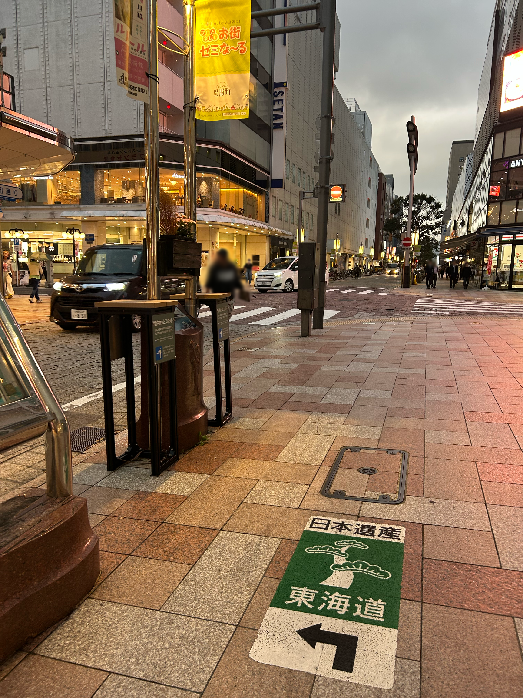
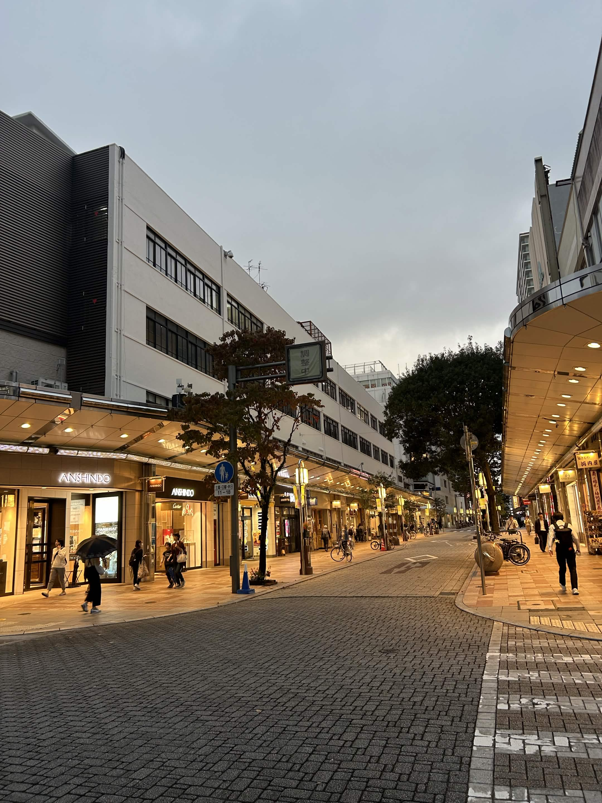

2026 10/27 (Tu)
あとで読み返したくなったときの為にある程度の検索性は必要だろうということで.......めんどいけど今後は適当でいいからキャプションを付けておこうと思う。
学科同期との外食イベントが発生したのでしゃぶ葉に行った後TUTAYAに行ったのだけれど、静岡駅北の通り(呉服町通りと言うらしい)を市役所より北まで歩いたのは今回が初めてだった。静岡に引っ越してもう2年半経つのにこんなにいい場所を今まで知らなかったのかと本当に驚いた。いやガチでなんで今まで来たことなかったんだろう.......


空がどんよりしていただけに暖色の灯りがすごく暖かく感じられて(微進次郎構文)、初めて来たはずなのに何故か不意に懐かしさを覚えてしまった。多分、暖色の灯りと低めの気温、暗い空という要素の集合が、クリスマスや実家にいた頃の冬を想起させるからだと思う。18で地元を飛び出した自分の判断は正しかったと思うし今の暮らしは心から気に入っているけれど、それでも不意に故郷を思い出して懐かしくなる瞬間がある。何かにつけて故郷を思い出してしまうのは大抵疲れているときなのであまり良くないのかもしれないが.......
そういう暖かな記憶と結びついた季節ではあるので概念としての冬は嫌いではないのだけれど、正直もうこれ以上寒くなられると結構しんどい(あまりにも寒さに弱すぎる)。ただ今日書きたかった主題は郷愁でも冬でもなく、ここに住んでそこそこ経つのに静岡という土地を何も知らないんだなあと思わされたということだ。正直、福岡からこちらへ来て最初に抱いた感想は福岡より田舎だなあくらいなものだった(色々と失礼だけど当時は福岡しか比較対象がなかった)。大学に入ってから一人旅を趣味とするようになり、各所の地方都市を巡り、その上で静岡という土地にもう一度目を向けるとまた違って映るのだけど静岡という土地に対するファーストインプレッションがあれだったの今思うとかなり勿体なかったなあと......今でこそ地方都市巡りを趣味にしているけれど、そうやって訪れる"旅先"としてこの土地を歩いてみたら多分今よりかなり魅力的に映っただろうなと思わなくはない。
知らなかった場所を歩いて、なんとなく旅先に来ているような気分になって、初めて静岡という土地そのものの魅力に触れられたような気がした。正直ここに住むメリットって関東や名古屋へのアクセスがいいくらいしか感じたことがなかったのだけれど、知らない街を歩いているときに感じる「なんかいいなあ」を初めてこの土地に感じられたような気がした。すげえ静岡disみたいだけどそういう意図はないですマジで.......ともかく、卒業までにもう少しこの土地のことを知ろうとしてみてもいいかもしれないなあと思った。
なんか長くなってしまった。どうでもいいけどCSSで画像を並べて表示する方法を完全に理解した、楽しい